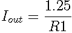

This design uses a commonly available linear regulator to produce a constant current source.
R1 is chosen such that the voltage drop across it will be equal to the linear regulator's reference voltage of 1.25 volts when the desired current is reached. Thus, the resistor value is determined by .
One downside to this configuration is the high voltage drop required across the shunt resistor. This results in a high power dissipation, requiring larger components, and also reduces the compliance voltage range for the current source.